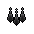
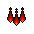
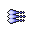
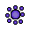

")
Magic - The Ancient Magicks
Desert Treasure - Unlock the Ancient Magicks | Smoke Spells | Shadow Spells
Blood Spells | Ice Spells | Miasmic Spells | Teleportation Spells
Blood Spells | Ice Spells | Miasmic Spells | Teleportation Spells
Desert Treasure - Unlock the Ancient Magicks
Upon completing this quest you will gain access to the Ancient Magicks spell list. Unlike other spells, which you are able to unlock as your Magic level advances, these spells require you to change your entire spell list (or 'book') by travelling to Jaldraocht Pyramid and praying at a special altar. To change back to the original spellbook, pray at the altar again.
The following are a list of Ancient Magick spells, divided into the type of damage they inflict.
Please note: The 'Burst' and 'Barrage' spell types are multi-target, but their multi-target effect is castable only in multicombat areas and will hit a maximum of a 9 square area (i.e. the opponent is the centre of a 3x3 grid). Be warned, you will hit your friends if they are in this area, regardless of any Wilderness capes being worn! If you are not in a multicombat area, the spell will only affect one target. Also note that it is impossible to hit more than 9 targets with a single barrage spell.
Smoke Spells
When a smoke spell is cast, not only will the spell inflict damage, you will poison your opponent.
| Spell Name | Magic Level | Casting Requirements | Maximum damage | Base Magic Experience Gained | |||||||
![[image]](../../img/main/kbase/skills/magic/spells/smokerush1.gif) Smoke Rush |
50 |
![[image]](../../img/main/kbase/items/runes/drune.gif) Death rune |
x2 | ![[image]](../../img/main/kbase/items/runes/frune.gif) Fire rune |
x1 | ![[image]](../../img/main/kbase/items/runes/arune.gif) Air rune |
x1 | ![[image]](../../img/main/kbase/items/runes/chrune.gif) Chaos rune |
x2 | 130 | 30 |
![[image]](../../img/main/kbase/skills/magic/spells/smokeburst1.gif) Smoke Burst |
62 |
Death rune |
x2 | Fire rune |
x2 | Air rune |
x2 | Chaos rune |
x4 | 170 | 36 |
![[image]](../../img/main/kbase/skills/magic/spells/smokeblitz1.gif) Smoke Blitz |
74 |
Death rune |
x2 | Fire rune |
x2 | Air rune |
x2 | ![[image]](../../img/main/kbase/items/runes/blrune.gif) Blood rune |
x2 | 230 | 42 |
![[image]](../../img/main/kbase/skills/magic/spells/smokebarrage1.gif) Smoke Barrage |
86 |
Death rune |
x4 | Fire rune |
x4 | Air rune |
x4 | Blood rune |
x2 | 270 | 48 |
Shadow Spells
When a shadow spell is cast, not only will the spell inflict damage, but you will temporarily lower your opponent's Attack level.
| Spell Name | Magic Level | Casting Requirements | Maximum damage | Base Magic Experience Gained | |||||||
![[image]](../../img/main/kbase/skills/magic/spells/shadowrush1.gif) Shadow Rush |
52 |
Death rune |
x2 | ![[image]](../../img/main/kbase/items/runes/srune.gif) Soul rune |
x1 | Air rune |
x1 | Chaos rune |
x2 | 140 | 31 |
![[image]](../../img/main/kbase/skills/magic/spells/shadowburst1.gif) Shadow Burst |
64 |
Death rune |
x2 | Soul rune |
x2 | Air rune |
x1 | Chaos rune |
x4 | 170 | 37 |
![[image]](../../img/main/kbase/skills/magic/spells/shadowblitz1.gif) Shadow Blitz |
76 |
Death rune |
x2 | Soul rune |
x2 | Air rune |
x2 | Blood rune |
x2 | 240 | 43 |
|  Shadow Barrage |
88 |
Death rune |
x4 | Soul rune |
x3 | Air rune |
x4 | Blood rune |
x2 | 280 | 48 |
Blood Spells
When a blood spell is cast, not only will the spell inflict damage, but you will heal up to a quarter of the damage inflicted.
| Spell Name | Magic Level | Casting Requirements | Maximum damage | Base Magic Experience Gained | |||||
![[image]](../../img/main/kbase/skills/magic/spells/bloodrush1.gif) Blood Rush |
56 |
Blood rune |
x1 | Death rune |
x2 | Chaos rune |
x2 | 150 | 33 |
![[image]](../../img/main/kbase/skills/magic/spells/bloodburst1.gif) Blood Burst |
68 |
Blood rune |
x2 | Death rune |
x2 | Chaos rune |
x4 | 210 | 39 |
![[image]](../../img/main/kbase/skills/magic/spells/bloodblitz1.gif) Blood Blitz |
80 |
Blood rune |
x4 | Death rune |
x2 | 250 | 45 | ||
|  Blood Barrage |
92 |
Blood rune |
x4 | Death rune |
x4 | Soul rune |
x1 | 290 | 51 |
Ice Spells
When an ice spell is cast, not only will the spell inflict damage, but you will freeze your opponent in place for the following amount of time:
- Ice Rush: 5 seconds
- Ice Burst: 10 seconds
- Ice Blitz: 15 seconds
- Ice Barrage: 20 seconds
| Spell Name | Magic Level | Casting Requirements | Maximum damage | Base Magic Experience Gained | |||||
![[image]](../../img/main/kbase/skills/magic/spells/icerush1.gif) Ice Rush |
58 |
Death rune |
x2 | ![[image]](../../img/main/kbase/items/runes/wrune.gif) Water rune |
x2 | Chaos rune |
x2 | 160 | 34 |
|  Ice Burst |
70 |
Death rune |
x2 | Water rune |
x4 | Chaos rune |
x4 | 220 | 40 |
![[image]](../../img/main/kbase/skills/magic/spells/iceblitz1.gif) Ice Blitz |
82 |
Death rune |
x2 | Water rune |
x3 | Blood rune |
x2 | 260 | 46 |
![[image]](../../img/main/kbase/skills/magic/spells/icebarrage1.gif) Ice Barrage |
94 |
Death rune |
x4 | Water rune |
x6 | Blood rune |
x2 | 300 | 52 |
Miasmic Spells
 You can only cast miasmic spells if you are wielding Zuriel's staff, which can be won on a PvP world.
You can only cast miasmic spells if you are wielding Zuriel's staff, which can be won on a PvP world.
When a miasmic spell is cast, not only will the spell inflict damage, but you will slow your opponent's melee or Ranged attack rates by 50% for a certain period of time:
- Miasmic Rush: 12 seconds
- Miasmic Burst: 24 seconds
- Miasmic Blitz: 36 seconds
- Miasmic Barrage: 48 seconds
| Spell Name | Magic Level | Casting Requirements | Maximum damage | Base Magic Experience Gained | |||||
![[image]](../../img/main/kbase/skills/magic/spells/miasmic_rush1.gif) Miasmic Rush |
61 |
Soul rune |
x1 | ![[image]](../../img/main/kbase/items/runes/erune.gif) Earth rune |
x1 | Chaos rune |
x2 | 180 | 36 |
![[image]](../../img/main/kbase/skills/magic/spells/miasmic_burst1.gif) Miasmic Burst |
73 |
Soul rune |
x2 | Earth rune |
x2 | Chaos rune |
x4 | 240 | 42 |
|  Miasmic Blitz |
85 |
Soul rune |
x3 | Earth rune |
x3 | Blood rune |
x2 | 280 | 48 |
![[image]](../../img/main/kbase/skills/magic/spells/miasmic_barrage1.gif) Miasmic Barrage |
97 |
Soul rune |
x4 | Earth rune |
x4 | Blood rune |
x4 | 320 | 54 |
Teleportation Spells
Please note: Some of the higher level Ancient Magick teleport spells will teleport you to certain depths of the Wilderness. Please remember that this does not mean it is possible to teleport back out. The limitations of no teleports within the deeper parts of the Wilderness still applies.
| Spell Name | Magic Level | Casting Requirements | Destination | Base Magic Experience Gained | |||||
![[image]](../../img/main/kbase/skills/magic/spells/home_teleport1.gif) Home Teleport * |
None | n/a | Edgeville | 0 | |||||
![[image]](../../img/main/kbase/skills/magic/spells/paddewwa_teleport.gif) Paddewwa Teleport |
54 |
![[image]](../../img/main/kbase/items/runes/lrune.gif) Law rune |
x2 | Air rune |
x1 | Fire rune |
x1 | Edgeville | 64 |
Senntisten Teleport |
60 |
Law rune |
x2 | Soul rune |
x1 | Digsite | 70 | ||
![[image]](../../img/main/kbase/skills/magic/spells/kharyrll_teleport.gif) Kharyrll Teleport |
66 |
Law rune |
x2 | Blood rune |
x1 | Canifis | 76 | ||
Lassar Teleport |
72 |
Law rune |
x2 | Water rune |
x4 | Ice Mountain | 82 | ||
![[image]](../../img/main/kbase/skills/magic/spells/dareeyak_teleport.gif) Dareeyak Teleport |
78 |
Law rune |
x2 | Air rune |
x2 | Fire rune |
x3 | Wilderness ruins | 88 |
Carrallangar Teleport |
84 |
Law rune |
x2 | Soul rune |
x2 | Wilderness graveyard | 82 | ||
![[image]](../../img/main/kbase/skills/magic/spells/annakarl_teleport.gif) Annakarl Teleport |
90 |
Law rune |
x2 | Blood rune |
x2 | Demonic ruins | 100 | ||
![[image]](../../img/main/kbase/skills/magic/spells/ghorrock_teleport.gif) Ghorrock Teleport |
96 |
Law rune |
x2 | Water rune |
x8 | Ice Plateau | 106 | ||
* Note that although the home teleport spell is free to cast, you may only cast it once every half hour. It also uses no runes as it is a ritual teleport, meaning that you will have to wait until the ritual is complete before doing anything else. As a result of this, the teleport can be interrupted by almost everything, as well as being constrained by all of the usual teleport restrictions; it's not such a great spell for escaping the Wilderness!
Click here to view the Magic FAQs
Click here to view the magic spells available in Daemonheim

More articles in
Magic
|
|
|
Further Help
If this article does not help you, you may find the following sections of the RuneScape site helpful:
|
|